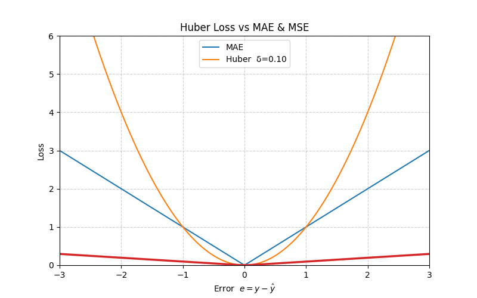

Loss Functions
Note: If you think I should correct something, let me know 😊.
This blog includes:
- What is a Loss Function
- When do we use Loss Function
- Common Loss Functions (Regression)
- Mean Absolute Error (MAE)
- Mean Squared Error (MSE)
- Root Mean Squared Error (RMSE)
- Huber Loss
- Log-Cosh Loss
- Classification Losses
- Reconstruction / Perceptual Losses
What is a Loss Function?
A loss function (or cost function) can be regarded as a score card that tells us how far the model's prediction is from the ground truth. We train models by minimizing this loss, so a lower value indicates better predictions.
When do we use Loss Function?
- Input goes into the model → Model produces a prediction (say \(\hat{y}\)) and we have the actual value \(y\).
- The loss function compares \(\hat{y}\) with \(y\).
- The model updates its parameters via an optimizer to reduce this loss on the next iteration.
\[ L(y, \hat{y}) \]
The goal of any machine‑learning model is to minimize \(L\).
Some Common Loss Functions in Regression Tasks
1. Mean Absolute Error (MAE)
\[ L_{\text{MAE}} = \frac{1}{n} \sum_{i=1}^{n} |y_i - \hat{y}_i| \]
\(L_{\text{MAE}}\) measures the average absolute difference between predictions and actual values — it cares only about the magnitude, not the sign.
import numpy as np
def mae_loss(y_true, y_pred):
return np.mean(np.abs(y_true - y_pred))
2. Mean Squared Error (MSE)
\[ L_{\text{MSE}} = \frac{1}{n} \sum_{i=1}^{n} (y_i - \hat{y}_i)^2 \]
Squaring the error magnifies larger mistakes, making MSE sensitive to outliers and well‑suited for gradient‑based optimization.
def mse_loss(y_true, y_pred):
return np.mean((y_true - y_pred) ** 2)
3. Root Mean Squared Error (RMSE)
\[ L_{\text{RMSE}} = \sqrt{L_{\text{MSE}}} = \sqrt{ \frac{1}{n} \sum_{i=1}^{n} (y_i - \hat{y}_i)^2 } \]
Taking the square root brings the metric back to the original scale of the target variable.
def rmse_loss(y_true, y_pred):
return np.sqrt(mse_loss(y_true, y_pred))
4. Huber Loss
The Huber loss blends MAE and MSE: it is quadratic for small errors (fast convergence) and linear for large errors (robust to outliers).
\[ L_{\text{Huber}}(e) = \begin{cases} \frac{1}{2} e^2, & |e| \le \delta \\ \delta \left( |e| - \frac{1}{2} \delta \right), & |e| > \delta \end{cases} \]
At \(e = \delta\), both branches meet smoothly:
\[ L_{\text{Huber}}(\delta) = \frac{1}{2}\,\delta^2 \]
Gradient:
\[ \frac{\partial L_{\text{Huber}}}{\partial \hat{y}} = \begin{cases} -(y-\hat{y}) = -e, & |e| \le \delta \\ -\delta\,\operatorname{sign}(e), & |e| > \delta \end{cases} \]
Second derivative:
\[ \frac{\partial^2 L_{\text{Huber}}}{\partial \hat{y}^2} = \begin{cases} 1, & |e| \le \delta \\ 0, & |e| > \delta \end{cases} \]
def huber(y_true, y_pred, delta=1.0):
e = y_true - y_pred
abs_e = np.abs(e)
quadratic = 0.5 * e**2
linear = delta * (abs_e - 0.5 * delta)
return np.mean(np.where(abs_e <= delta, quadratic, linear))
5. Log‑Cosh Loss
With \(e = y - \hat y\), define
\[L_{\text{LogCosh}}(e)=\log\bigl(\cosh(e)\bigr)\]
Series expansion (small errors)
\[\log(\cosh e)=\tfrac{e^2}{2}-\tfrac{e^4}{12}+\mathcal O(e^6)\]
≈ MSE when \(|e|\) is small.
Full gradient derivation
\[\frac{\partial L_{\text{LogCosh}}}{\partial \hat y}=\frac{d}{de}\log(\cosh e)\cdot\frac{\partial e}{\partial \hat y}\]
\[\frac{\partial e}{\partial \hat y}=-1\]
\[\frac{d}{de}\log(\cosh e)=\frac{1}{\cosh e}\cdot\frac{d}{de}\cosh e\] \[\frac{d}{de}\cosh e=\sinh e\] \[\therefore \frac{d}{de}\log(\cosh e)=\frac{\sinh e}{\cosh e}=\tanh e\]
\[\boxed{\displaystyle\frac{\partial L_{\text{LogCosh}}}{\partial \hat y}=-\tanh(e)=-\tanh(y-\hat y)}\]
Second derivative:
\[ \frac{\partial^{2} L_{\text{LogCosh}}}{\partial \hat{y}^{2}} = 1 - \tanh^{2}(e) = \operatorname{sech}^2(e) \]
def log_cosh(y_true, y_pred):
e = y_true - y_pred
return np.mean(np.log(np.cosh(e)))
Classification Loss Functions
When the target \(y\) is categorical, our objective is usually to maximize the log-likelihood of the correct class. Below are the most common losses.
1. Binary Cross-Entropy (BCE)
Assume each label \(y \in \{0,1\}\) is drawn from a Bernoulli distribution parameterised by the model's prediction \(\hat y = p_\theta(y{=}1 \mid \mathbf x)\). Its probability mass function is
\[ P_\theta(y \mid \mathbf x) \;=\; \hat y^{\,y}\, (1-\hat y)^{\,1-y}. \]
The log-likelihood for a single observation becomes
\[ \ell(\theta) \;=\; \log P_\theta(y \mid \mathbf x) \;=\; y \log \hat y \;+\; (1-y)\log(1-\hat y). \]
Maximising the likelihood is identical to minimising its negative, yielding the **Binary Cross-Entropy loss**
\[ L_{\text{BCE}}(y,\hat y) = -\bigl(y\log\hat y + (1 - y)\log(1 - \hat y)\bigr). \]
Gradient with respect to the probability \(\hat y\)
\[ \frac{\partial L_{\text{BCE}}}{\partial \hat y} = -\frac{y}{\hat y} + \frac{1 - y}{1 - \hat y} = \frac{\hat y - y}{\hat y(1-\hat y)}. \]
When training with logits \(z = \sigma^{-1}(\hat y)\) instead of probabilities, the derivative simplifies elegantly to
\[ \frac{\partial L_{\text{BCE}}}{\partial z} = \hat y - y, \]
which makes logistic-regression-style updates extremely convenient.
import torch.nn.functional as F
def bce_loss(y_true, y_pred, eps=1e-7):
y_pred = y_pred.clamp(min=eps, max=1 - eps)
return F.binary_cross_entropy(y_pred, y_true)
2. Categorical / Softmax Cross-Entropy
Let logits \(\mathbf z\in\mathbb R^{K}\) be transformed via soft-max
\[ p_k \;=\; \operatorname{softmax}(\mathbf z)_k \;=\; \frac{\exp(z_k)}{\sum_{j=1}^{K}\exp(z_j)}. \]
Assuming a one-hot ground-truth vector \(\mathbf y\) with \(y_c=1\) for the correct class \(c\), the categorical (multinomial) likelihood of a single sample is
\[ P_\theta(\mathbf y\mid\mathbf x) \;=\;\prod_{k=1}^{K} p_k^{\,y_k} \;=\; p_c. \]
The negative log-likelihood (= loss) therefore simplifies to
\[ L_{\text{CE}} = -\sum_{k=1}^{K} y_k\log p_k = -\log p_c. \]
Gradient w.r.t. each logit \(z_k\)
\[ \frac{\partial L_{\text{CE}}}{\partial z_k} = p_k - y_k. \]
The update rule is beautifully simple: subtract the one-hot vector, add the prediction.
import torch.nn.functional as F
def softmax_ce(logits, target_index):
return F.cross_entropy(logits, target_index)
3. Focal Loss
The Focal Loss (Lin et al., 2017) adds two hyper-parameters—focusing factor \(\gamma\) and class weight \(\alpha\)—to address extreme class imbalance by down-weighting "easy" examples.
\[ L_{\text{Focal}} = -\alpha\,(1 - p_t)^{\gamma}\,\log(p_t), \quad \color{gray}{\text{where } p_t = \begin{cases} p & \text{if } y=1 \\ 1-p & \text{if } y=0 \end{cases}} \]
When the prediction is already confident (\(p_t\rightarrow 1\)) the factor \((1-p_t)^\gamma\) shrinks the loss—\(\gamma = 0\) recovers ordinary CE; \(\gamma > 0\) progressively focuses training on hard, mis-classified cases.
Gradient for the binary case
\[ \frac{\partial L_{\text{Focal}}}{\partial p} = \frac{\partial}{\partial p} \Bigl[-(1-p_t)^{\gamma}\log(p_t)\Bigr] = (1-p_t)^{\gamma-1} \Bigl[\gamma\,p_t\log(p_t) - (1-p_t)\Bigr] \cdot \begin{cases} +1 & y=1 \\ -1 & y=0 \end{cases} \]
def focal_loss(y_true, y_pred, alpha=0.25, gamma=2.0, eps=1e-7):
y_pred = y_pred.clamp(eps, 1 - eps)
p_t = torch.where(y_true == 1, y_pred, 1 - y_pred)
alpha_t = torch.where(y_true == 1, alpha, 1 - alpha)
loss = -alpha_t * (1 - p_t) ** gamma * torch.log(p_t)
return loss.mean()
4. Kullback-Leibler Divergence (KL)
The KL divergence measures how one probability distribution \(\mathbf p\) "departs" from another distribution \(\mathbf q\). For discrete variables with \(K\) states:
\[ D_{\text{KL}}(\mathbf p\Vert\mathbf q) \;=\; \sum_{k=1}^{K} p_k \log \frac{p_k}{q_k}, \]
which can be derived by comparing the expected code-lengths assigned by two optimal Shannon codes (one built for \(\mathbf p\), one for \(\mathbf q\)). Equivalently, it is the expected excess negative log-likelihood when using \(\mathbf q\) to encode samples drawn from \(\mathbf p\).
- Non-negativity: \(D_{\text{KL}}\ge 0\) with equality iff \(\mathbf p=\mathbf q\).
- Asymmetry: \(D_{\text{KL}}(\mathbf p\!\Vert\!\mathbf q) \neq D_{\text{KL}}(\mathbf q\!\Vert\!\mathbf p)\).
Gradient w.r.t. model logits
Assume \(\mathbf q\) comes from model logits
\(\mathbf z\) via soft-max. One can show
\[ \frac{\partial D_{\text{KL}}(\mathbf p\Vert\mathbf q)} {\partial z_j} = q_j - p_j. \]
This is the same form as the gradient of ordinary cross-entropy; therefore many frameworks implement KL as a drop-in replacement.
Example (Variational Auto-Encoder)
In VAEs we minimise
\(\,D_{\text{KL}}\!\bigl(
q_\phi(\mathbf z\mid\mathbf x)
\;\Vert\;
p(\mathbf z)
\bigr)\),
driving the approximate posterior towards the prior, while maximising
the reconstruction term.
def kl_divergence(p, q, eps=1e-7):
p = p.clamp(eps, 1)
q = q.clamp(eps, 1)
return (p * (p / q).log()).sum(dim=-1).mean()
Reconstruction / Perceptual Losses
Autoencoders, VAEs, GANs and diffusion models learn to recreate the input or a target sample. Besides simple pixel-space metrics, perceptual criteria often yield crisper outputs.
1. Pixel-space L1 (MAE)
\[ L_{L1} = \lVert \mathbf x - \hat{\mathbf x}\rVert_{1} \]
2. Binary Cross-Entropy Reconstruction
Typical for Bernoulli-likelihood VAEs where pixels are scaled to \([0,1]\).
4. Perceptual (Feature-Space) Loss
Pixel-wise criteria (L1, L2) often treat two images as identical if every pixel differs by a small value—even when high-level structure is clearly distorted to the human eye. Perceptual loss fixes this by comparing images in the activation space of a pretrained vision network (VGG-19, ResNet-50, CLIP ViT, …).
\[ L_{\text{percep}}(x,\hat x) \;=\; \sum_{\ell\in\mathcal L} \lambda_\ell\; \bigl\lVert \,\phi_\ell(x)\;-\;\phi_\ell(\hat x)\, \bigr\rVert_1, \]
where \(\phi_\ell\) extracts the feature map at layer \(\ell\) and \(\lambda_\ell\) are user-defined weights (often all 1).
- Super-resolution / deblurring – encourages sharp edges that "look" realistic rather than simply low MSE.
- Style-transfer – combine a content perceptual term with a Gram-matrix style term.
- GANs & Diffusion – perceptual fine-tuning leads to crisper outputs.
Back-propagation: Gradients flow through the frozen feature extractor: \(\displaystyle \tfrac{\partial L}{\partial \hat x} = \sum_\ell \lambda_\ell\, \partial \phi_\ell^\top\, \operatorname{sgn}\bigl[\phi_\ell(\hat x)-\phi_\ell(x)\bigr]\), making training stable because \(\phi_\ell\) parameters remain fixed.
import torch.nn.functional as F
from torchvision import models
vgg = models.vgg19(weights=models.VGG19_Weights.DEFAULT).features.eval()
def perceptual_loss(x, x_hat, layers=(8, 17)): # conv3_3 ≈ 16, conv4_3 ≈ 25
with torch.no_grad():
feats_x, feats_hat = [], []
out_x, out_hat = x, x_hat
for i, layer in enumerate(vgg):
out_x = layer(out_x)
out_hat = layer(out_hat)
if i in layers:
feats_x.append(out_x)
feats_hat.append(out_hat)
loss = sum(F.l1_loss(fh, fx) for fx, fh in zip(feats_x, feats_hat))
return loss
5. Charbonnier (Smooth L1) Loss
The Charbonnier loss—sometimes called "Smooth L1"—is a strictly differentiable approximation of the absolute-error (L1) that behaves quadratically near zero and linearly in the tails, providing robustness against outliers without the gradient singularity of L1.
\[ L_{\text{Charb}}\bigl(e\bigr) \;=\; \sqrt{e^{2} + \epsilon^{2}}, \qquad e = x - \hat x, \]
where \(\epsilon>0\) is a small constant (e.g. 1e-3 or 1e-6) controlling the transition width between the quadratic and linear regimes.
Near zero error. Using a second-order expansion (\(e\ll\epsilon\)):
\[ L_{\text{Charb}} = \epsilon\, \sqrt{1 + \bigl(e/\epsilon\bigr)^2} \;\approx\; \epsilon \Bigl[1 + \tfrac12(e/\epsilon)^2 - \tfrac18(e/\epsilon)^4 + \dots\Bigr] \;\approx\; \tfrac{e^{2}}{2\,\epsilon} + \mathcal O(e^{4}), \]
hence the loss is effectively **quadratic** near the optimum, leading to smooth convergence.
Gradient.
\[ \frac{\partial L_{\text{Charb}}}{\partial \hat x} = -\frac{e}{\sqrt{e^{2} + \epsilon^{2}}}. \]
As \(|e|\rightarrow\infty\) this gradient approaches \(-\operatorname{sign}(e)\), matching MAE's clipping behaviour and preventing exploding updates.
import torch
import torch.nn.functional as F
def charbonnier_loss(x, x_hat, eps=1e-6):
diff = x - x_hat
loss = torch.sqrt(diff * diff + eps * eps)
return loss.mean()
PSNR: 26.16 dB
PSNR: 26.26 dB
PSNR: 26.68 dB

PSNR: 22.51 dB